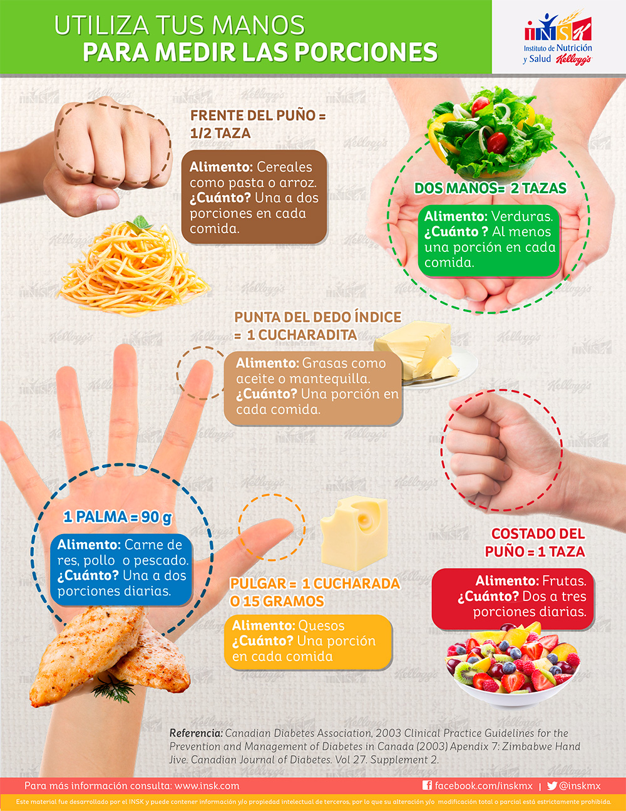

Hola, Andrea
Andrea, llénate de verdad, sin sumar de más.
👆Marca lo que tienes
⚡Genera tu receta
🍽️Come en 15 min
El día de Andrea
Guía: mide tus porciones con las manos

Clave de Gemini para analizar fotos
Consigue una gratis en aistudio.google.com/apikey. Se guarda solo en este dispositivo y solo se envía a Google.
La Matriz
Toca un alimento para cambiar sus valores o quitarlo, o usa ＋ para agregar uno tuyo.